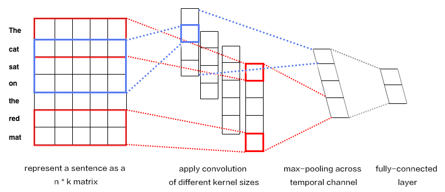

# Personalized Recommendation
The source code from this tutorial is at [here](https://github.com/PaddlePaddle/book/tree/develop/05.recommender_system). For instructions to run it, please refer to [this guide](https://github.com/PaddlePaddle/book/blob/develop/README.md#running-the-book).
## Background
The recommender system is a component of e-commerce, online videos, and online reading services. There are several different approaches for recommender systems to learn from user behavior and product properties and to understand users' interests.
- User behavior-based approach. A well-known method of this approach is collaborative filtering, which assumes that if two users made similar purchases, they share common interests and would likely go on making the same decision. Some variants of collaborative filtering are user-based[[3](#references)], item-based [[4](#references)], social network based[[5](#references)], and model-based.
- Content-based approach[[1](#references)]. This approach represents product properties and user interests as feature vectors of the same space so that it could measure how much a user is interested in a product by the distance between two feature vectors.
- Hybrid approach[[2](#references)]: This one combines above two to help with each other about the data sparsity problem[[6](#references)].
This tutorial explains a deep learning based hybrid approach and its implement in PaddlePaddle. We are going to train a model using a dataset that includes user information, movie information, and ratings. Once we train the model, we will be able to get a predicted rating given a pair of user and movie IDs.
## Model Overview
To know more about deep learning based recommendation, let us start from going over the Youtube recommender system[[7](#references)] before introducing our hybrid model.
### YouTube's Deep Learning Recommendation Model
YouTube is a video-sharing Web site with one of the largest user base in the world. Its recommender system serves more than a billion users. This system is composed of two major parts: candidate generation and ranking. The former selects few hundreds of candidates from millions of videos, and the latter ranks and outputs the top 10.

Figure 1. YouTube recommender system overview.
#### Candidate Generation Network
YouTube models candidate generation as a multi-class classification problem with a huge number of classes equal to the number of videos. The architecture of the model is as follows:

Figure 2. Deep candidate generation model.
The first stage of this model maps watching history and search queries into fixed-length representative features. Then, an MLP (multi-layer Perceptron, as described in the [Recognize Digits](https://github.com/PaddlePaddle/book/blob/develop/recognize_digits/README.md) tutorial) takes the concatenation of all representative vectors. The output of the MLP represents the user' *intrinsic interests*. At training time, it is used together with a softmax output layer for minimizing the classification error. At serving time, it is used to compute the relevance of the user with all movies.
For a user $U$, the predicted watching probability of video $i$ is
$$P(\omega=i|u)=\frac{e^{v_{i}u}}{\sum_{j \in V}e^{v_{j}u}}$$
where $u$ is the representative vector of user $U$, $V$ is the corpus of all videos, $v_i$ is the representative vector of the $i$-th video. $u$ and $v_i$ are vectors of the same length, so we can compute their dot product using a fully connected layer.
This model could have a performance issue as the softmax output covers millions of classification labels. To optimize performance, at the training time, the authors down-sample negative samples, so the actual number of classes is reduced to thousands. At serving time, the authors ignore the normalization of the softmax outputs, because the results are just for ranking.
#### Ranking Network
The architecture of the ranking network is similar to that of the candidate generation network. Similar to ranking models widely used in online advertising, it uses rich features like video ID, last watching time, etc. The output layer of the ranking network is a weighted logistic regression, which rates all candidate videos.
### Hybrid Model
In the section, let us introduce our movie recommendation system. Especially, we feed moives titles into a text convolution network to get a fixed-length representative feature vector. Accordingly we will introduce the convolutional neural network for texts and the hybrid recommendation model respectively.
#### Convolutional Neural Networks for Texts (CNN)
**Convolutional Neural Networks** are frequently applied to data with grid-like topology such as two-dimensional images and one-dimensional texts. A CNN can extract multiple local features, combine them, and produce high-level abstractions, which correspond to semantic understanding. Empirically, CNN is shown to be efficient for image and text modeling.
CNN mainly contains convolution and pooling operation, with versatile combinations in various applications. Here, we briefly describe a CNN as shown in Figure 3.

Figure 3. CNN for text modeling.
Let $n$ be the length of the sentence to process, and the $i$-th word has embedding as $x_i\in\mathbb{R}^k$，where $k$ is the embedding dimensionality.
First, we concatenate the words by piecing together every $h$ words, each as a window of length $h$. This window is denoted as $x_{i:i+h-1}$, consisting of $x_{i},x_{i+1},\ldots,x_{i+h-1}$, where $x_i$ is the first word in the window and $i$ takes value ranging from $1$ to $n-h+1$: $x_{i:i+h-1}\in\mathbb{R}^{hk}$.
Next, we apply the convolution operation: we apply the kernel $w\in\mathbb{R}^{hk}$ in each window, extracting features $c_i=f(w\cdot x_{i:i+h-1}+b)$, where $b\in\mathbb{R}$ is the bias and $f$ is a non-linear activation function such as $sigmoid$. Convolving by the kernel at every window ${x_{1:h},x_{2:h+1},\ldots,x_{n-h+1:n}}$ produces a feature map in the following form:
$$c=[c_1,c_2,\ldots,c_{n-h+1}], c \in \mathbb{R}^{n-h+1}$$
Next, we apply *max pooling* over time to represent the whole sentence $\hat c$, which is the maximum element across the feature map:
$$\hat c=max(c)$$
#### Model Structure Of The Hybrid Model
In our network, the input includes features of users and movies. The user feature includes four properties: user ID, gender, occupation, and age. Movie features include their IDs, genres, and titles.
We use fully-connected layers to map user features into representative feature vectors and concatenate them. The process of movie features is similar, except that for movie titles -- we feed titles into a text convolution network as described in the above section to get a fixed-length representative feature vector.
Given the feature vectors of users and movies, we compute the relevance using cosine similarity. We minimize the squared error at training time.

Figure 4. A hybrid recommendation model.
## Dataset
We use the [MovieLens ml-1m](http://files.grouplens.org/datasets/movielens/ml-1m.zip) to train our model. This dataset includes 10,000 ratings of 4,000 movies from 6,000 users to 4,000 movies. Each rate is in the range of 1~5. Thanks to GroupLens Research for collecting, processing and publishing the dataset.
`paddle.datasets` package encapsulates multiple public datasets, including `cifar`, `imdb`, `mnist`, `movielens` and `wmt14`, etc. There's no need for us to manually download and preprocess `MovieLens` dataset.
The raw `MoiveLens` contains movie ratings, relevant features from both movies and users.
For instance, one movie's feature could be:
```python
import paddle
movie_info = paddle.dataset.movielens.movie_info()
print movie_info.values()[0]
```
```text
```
One user's feature could be:
```python
user_info = paddle.dataset.movielens.user_info()
print user_info.values()[0]
```
```text
```
In this dateset, the distribution of age is shown as follows:
```text
1: "Under 18"
18: "18-24"
25: "25-34"
35: "35-44"
45: "45-49"
50: "50-55"
56: "56+"
```
User's occupation is selected from the following options:
```text
0: "other" or not specified
1: "academic/educator"
2: "artist"
3: "clerical/admin"
4: "college/grad student"
5: "customer service"
6: "doctor/health care"
7: "executive/managerial"
8: "farmer"
9: "homemaker"
10: "K-12 student"
11: "lawyer"
12: "programmer"
13: "retired"
14: "sales/marketing"
15: "scientist"
16: "self-employed"
17: "technician/engineer"
18: "tradesman/craftsman"
19: "unemployed"
20: "writer"
```
Each record consists of three main components: user features, movie features and movie ratings.
Likewise, as a simple example, consider the following:
```python
train_set_creator = paddle.dataset.movielens.train()
train_sample = next(train_set_creator())
uid = train_sample[0]
mov_id = train_sample[len(user_info[uid].value())]
print "User %s rates Movie %s with Score %s"%(user_info[uid], movie_info[mov_id], train_sample[-1])
```
```text
User rates Movie with Score [5.0]
```
The output shows that user 1 gave movie `1193` a rating of 5.
After issuing a command `python train.py`, training will start immediately. The details will be unpacked by the following sessions to see how it works.
## Model Configuration
Our program starts with importing necessary packages and initializing some global variables:
```python
from __future__ import print_function
import math
import sys
import numpy as np
import paddle
import paddle.fluid as fluid
import paddle.fluid.layers as layers
import paddle.fluid.nets as nets
try:
from paddle.fluid.contrib.trainer import *
from paddle.fluid.contrib.inferencer import *
except ImportError:
print(
"In the fluid 1.0, the trainer and inferencer are moving to paddle.fluid.contrib",
file=sys.stderr)
from paddle.fluid.trainer import *
from paddle.fluid.inferencer import *
IS_SPARSE = True
USE_GPU = False
BATCH_SIZE = 256
```
Then we define the model configuration for user combined features:
```python
def get_usr_combined_features():
USR_DICT_SIZE = paddle.dataset.movielens.max_user_id() + 1
uid = layers.data(name='user_id', shape=[1], dtype='int64')
usr_emb = layers.embedding(
input=uid,
dtype='float32',
size=[USR_DICT_SIZE, 32],
param_attr='user_table',
is_sparse=IS_SPARSE)
usr_fc = layers.fc(input=usr_emb, size=32)
USR_GENDER_DICT_SIZE = 2
usr_gender_id = layers.data(name='gender_id', shape=[1], dtype='int64')
usr_gender_emb = layers.embedding(
input=usr_gender_id,
size=[USR_GENDER_DICT_SIZE, 16],
param_attr='gender_table',
is_sparse=IS_SPARSE)
usr_gender_fc = layers.fc(input=usr_gender_emb, size=16)
USR_AGE_DICT_SIZE = len(paddle.dataset.movielens.age_table)
usr_age_id = layers.data(name='age_id', shape=[1], dtype="int64")
usr_age_emb = layers.embedding(
input=usr_age_id,
size=[USR_AGE_DICT_SIZE, 16],
is_sparse=IS_SPARSE,
param_attr='age_table')
usr_age_fc = layers.fc(input=usr_age_emb, size=16)
USR_JOB_DICT_SIZE = paddle.dataset.movielens.max_job_id() + 1
usr_job_id = layers.data(name='job_id', shape=[1], dtype="int64")
usr_job_emb = layers.embedding(
input=usr_job_id,
size=[USR_JOB_DICT_SIZE, 16],
param_attr='job_table',
is_sparse=IS_SPARSE)
usr_job_fc = layers.fc(input=usr_job_emb, size=16)
concat_embed = layers.concat(
input=[usr_fc, usr_gender_fc, usr_age_fc, usr_job_fc], axis=1)
usr_combined_features = layers.fc(input=concat_embed, size=200, act="tanh")
return usr_combined_features
```
As shown in the above code, the input is four dimension integers for each user, that is `user_id`,`gender_id`, `age_id` and `job_id`. In order to deal with these features conveniently, we use the language model in NLP to transform these discrete values into embedding vaules `usr_emb`, `usr_gender_emb`, `usr_age_emb` and `usr_job_emb`.
Then we can use user features as input, directly connecting to a fully-connected layer, which is used to reduce dimension to 200.
Furthermore, we do a similar transformation for each movie feature. The model configuration is:
```python
def get_mov_combined_features():
MOV_DICT_SIZE = paddle.dataset.movielens.max_movie_id() + 1
mov_id = layers.data(name='movie_id', shape=[1], dtype='int64')
mov_emb = layers.embedding(
input=mov_id,
dtype='float32',
size=[MOV_DICT_SIZE, 32],
param_attr='movie_table',
is_sparse=IS_SPARSE)
mov_fc = layers.fc(input=mov_emb, size=32)
CATEGORY_DICT_SIZE = len(paddle.dataset.movielens.movie_categories())
category_id = layers.data(
name='category_id', shape=[1], dtype='int64', lod_level=1)
mov_categories_emb = layers.embedding(
input=category_id, size=[CATEGORY_DICT_SIZE, 32], is_sparse=IS_SPARSE)
mov_categories_hidden = layers.sequence_pool(
input=mov_categories_emb, pool_type="sum")
MOV_TITLE_DICT_SIZE = len(paddle.dataset.movielens.get_movie_title_dict())
mov_title_id = layers.data(
name='movie_title', shape=[1], dtype='int64', lod_level=1)
mov_title_emb = layers.embedding(
input=mov_title_id, size=[MOV_TITLE_DICT_SIZE, 32], is_sparse=IS_SPARSE)
mov_title_conv = nets.sequence_conv_pool(
input=mov_title_emb,
num_filters=32,
filter_size=3,
act="tanh",
pool_type="sum")
concat_embed = layers.concat(
input=[mov_fc, mov_categories_hidden, mov_title_conv], axis=1)
mov_combined_features = layers.fc(input=concat_embed, size=200, act="tanh")
return mov_combined_features
```
Movie title, which is a sequence of words represented by an integer word index sequence, will be fed into a `sequence_conv_pool` layer, which will apply convolution and pooling on time dimension. Because pooling is done on time dimension, the output will be a fixed-length vector regardless the length of the input sequence.
Finally, we can define a `inference_program` that uses cosine similarity to calculate the similarity between user characteristics and movie features.
```python
def inference_program():
usr_combined_features = get_usr_combined_features()
mov_combined_features = get_mov_combined_features()
inference = layers.cos_sim(X=usr_combined_features, Y=mov_combined_features)
scale_infer = layers.scale(x=inference, scale=5.0)
return scale_infer
```
Then we define a `training_program` that uses the result from `inference_program` to compute the cost with label data.
Also define `optimizer_func` to specify the optimizer.
```python
def train_program():
scale_infer = inference_program()
label = layers.data(name='score', shape=[1], dtype='float32')
square_cost = layers.square_error_cost(input=scale_infer, label=label)
avg_cost = layers.mean(square_cost)
return [avg_cost, scale_infer]
def optimizer_func():
return fluid.optimizer.SGD(learning_rate=0.2)
```
## Model Training
### Specify training environment
Specify your training environment, you should specify if the training is on CPU or GPU.
```python
use_cuda = False
place = fluid.CUDAPlace(0) if use_cuda else fluid.CPUPlace()
```
### Datafeeder Configuration
Next we define data feeders for test and train. The feeder reads a `buf_size` of data each time and feed them to the training/testing process.
`paddle.dataset.movielens.train` will yield records during each pass, after shuffling, a batch input of `BATCH_SIZE` is generated for training.
```python
train_reader = paddle.batch(
paddle.reader.shuffle(
paddle.dataset.movielens.train(), buf_size=8192),
batch_size=BATCH_SIZE)
test_reader = paddle.batch(
paddle.dataset.movielens.test(), batch_size=BATCH_SIZE)
```
### Create Trainer
Create a trainer that takes `train_program` as input and specify optimizer function.
```python
trainer = Trainer(
train_func=train_program, place=place, optimizer_func=optimizer_func)
```
### Feeding Data
`feed_order` is devoted to specifying the correspondence between each yield record and `paddle.layer.data`. For instance, the first column of data generated by `movielens.train` corresponds to `user_id` feature.
```python
feed_order = [
'user_id', 'gender_id', 'age_id', 'job_id', 'movie_id', 'category_id',
'movie_title', 'score'
]
```
### Event Handler
Callback function `event_handler` will be called during training when a pre-defined event happens.
For example, we can check the cost by `trainer.test` when `EndStepEvent` occurs
```python
# Specify the directory path to save the parameters
params_dirname = "recommender_system.inference.model"
def event_handler(event):
if isinstance(event, EndStepEvent):
test_reader = paddle.batch(
paddle.dataset.movielens.test(), batch_size=BATCH_SIZE)
avg_cost_set = trainer.test(
reader=test_reader, feed_order=feed_order)
# get avg cost
avg_cost = np.array(avg_cost_set).mean()
print("avg_cost: %s" % avg_cost)
if float(avg_cost) < 4: # Change this number to adjust accuracy
trainer.save_params(params_dirname)
trainer.stop()
else:
print('BatchID {0}, Test Loss {1:0.2}'.format(event.epoch + 1,
float(avg_cost)))
if math.isnan(float(avg_cost)):
sys.exit("got NaN loss, training failed.")
```
### Training
Finally, we invoke `trainer.train` to start training with `num_epochs` and other parameters.
```python
trainer.train(
num_epochs=1,
event_handler=event_handler,
reader=train_reader,
feed_order=feed_order)
```
## Inference
### Create Inferencer
Initialize Inferencer with `inference_program` and `params_dirname` which is where we save params from training.
```python
inferencer = Inferencer(
inference_program, param_path=params_dirname, place=place)
```
### Generate input data for testing
Use create_lod_tensor(data, lod, place) API to generate LoD Tensor, where `data` is a list of sequences of index numbers, `lod` is the level of detail (lod) info associated with `data`.
For example, data = [[10, 2, 3], [2, 3]] means that it contains two sequences of indices, of length 3 and 2, respectively.
Correspondingly, lod = [[3, 2]] contains one level of detail info, indicating that `data` consists of two sequences of length 3 and 2.
In this infer example, we try to predict rating of movie 'Hunchback of Notre Dame' from the info of user id 1.
```python
infer_movie_id = 783
infer_movie_name = paddle.dataset.movielens.movie_info()[infer_movie_id].title
user_id = fluid.create_lod_tensor([[1]], [[1]], place)
gender_id = fluid.create_lod_tensor([[1]], [[1]], place)
age_id = fluid.create_lod_tensor([[0]], [[1]], place)
job_id = fluid.create_lod_tensor([[10]], [[1]], place)
movie_id = fluid.create_lod_tensor([[783]], [[1]], place) # Hunchback of Notre Dame
category_id = fluid.create_lod_tensor([[10, 8, 9]], [[3]], place) # Animation, Children's, Musical
movie_title = fluid.create_lod_tensor([[1069, 4140, 2923, 710, 988]], [[5]],
place) # 'hunchback','of','notre','dame','the'
```
### Infer
Now we can infer with inputs that we provide in `feed_order` during training.
```python
results = inferencer.infer(
{
'user_id': user_id,
'gender_id': gender_id,
'age_id': age_id,
'job_id': job_id,
'movie_id': movie_id,
'category_id': category_id,
'movie_title': movie_title
},
return_numpy=False)
predict_rating = np.array(results[0])
print("Predict Rating of user id 1 on movie \"" + infer_movie_name + "\" is " + str(predict_rating[0][0]))
print("Actual Rating of user id 1 on movie \"" + infer_movie_name + "\" is 4.")
```
## Conclusion
This tutorial goes over traditional approaches in recommender system and a deep learning based approach. We also show that how to train and use the model with PaddlePaddle. Deep learning has been well used in computer vision and NLP, we look forward to its new successes in recommender systems.
## References
1. [Peter Brusilovsky](https://en.wikipedia.org/wiki/Peter_Brusilovsky) (2007). *The Adaptive Web*. p. 325.
2. Robin Burke , [Hybrid Web Recommender Systems](http://www.dcs.warwick.ac.uk/~acristea/courses/CS411/2010/Book%20-%20The%20Adaptive%20Web/HybridWebRecommenderSystems.pdf), pp. 377-408, The Adaptive Web, Peter Brusilovsky, Alfred Kobsa, Wolfgang Nejdl (Ed.), Lecture Notes in Computer Science, Springer-Verlag, Berlin, Germany, Lecture Notes in Computer Science, Vol. 4321, May 2007, 978-3-540-72078-2.
3. P. Resnick, N. Iacovou, etc. “[GroupLens: An Open Architecture for Collaborative Filtering of Netnews](http://ccs.mit.edu/papers/CCSWP165.html)”, Proceedings of ACM Conference on Computer Supported Cooperative Work, CSCW 1994. pp.175-186.
4. Sarwar, Badrul, et al. "[Item-based collaborative filtering recommendation algorithms.](http://files.grouplens.org/papers/www10_sarwar.pdf)" *Proceedings of the 10th International Conference on World Wide Web*. ACM, 2001.
5. Kautz, Henry, Bart Selman, and Mehul Shah. "[Referral Web: Combining Social networks and collaborative filtering.](http://www.cs.cornell.edu/selman/papers/pdf/97.cacm.refweb.pdf)" Communications of the ACM 40.3 (1997): 63-65. APA
6. Yuan, Jianbo, et al. ["Solving Cold-Start Problem in Large-scale Recommendation Engines: A Deep Learning Approach."](https://arxiv.org/pdf/1611.05480v1.pdf) *arXiv preprint arXiv:1611.05480* (2016).
7. Covington P, Adams J, Sargin E. [Deep neural networks for youtube recommendations](https://static.googleusercontent.com/media/research.google.com/zh-CN//pubs/archive/45530.pdf)[C]//Proceedings of the 10th ACM Conference on Recommender Systems. ACM, 2016: 191-198.
This tutorial is contributed by PaddlePaddle, and licensed under a Creative Commons Attribution-ShareAlike 4.0 International License.